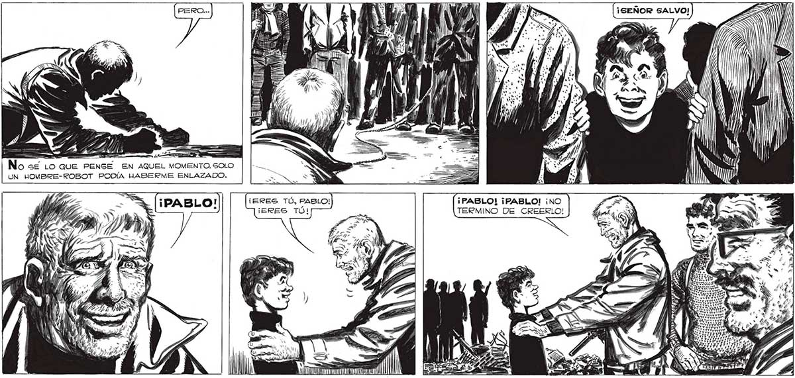
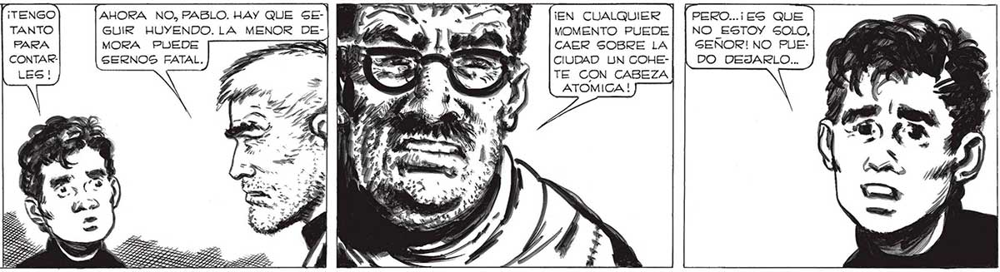

Ps Api úl MILAN DN | iS | — | IN Y Wi ha ¡SEÑOR SALVO! ¡A! NOA — ó io ! ¡Nos SE LO QUE PENSE EN AQUEL MOMENTO. SOLO UN HOMBRE-ROBOT PODÍA HABERME ENLAZADO. ¡PABLO! ¡PABLO! ¡NO TERMINO DE CREERLO! , E DE + A pu % vr 14 xd DIT Y e SS AAA LA Ai as + , uNa Lo A o yde nan iibay XA - DA , AI y XES r an e PA e pe A > A E EA " EE 4 » h Y , Y> A a Er RE TAS 4 a S Y 2. ,] < AHORA NO, PABLO. HAY QUE SE£- 2 A ¡EN CUALQUIER PERO...¡ES QUE » GUIR HUYENDO. LA MENOR DE- : E" dd MOMENTO PUEDE| | NO ESTOY SOLO, Era PABLO, sl; MORA PUEDE : A le ml. CAER SOBRE LA| | SEÑOR! NO PUEEL CHICO DE LA . SERNOS FATAL. - 7% PEL: Y Ds CIUDAD UN COHE- DO DEJARLO... FERRETERIA, AL 1 , : SN: Ny ; TE CON CABEZA QUE FAVA Y YO Ls > <= | TIA GALVARAMOG. LE p % , y” EN > DIMOS POR MUERTO JUNTO CON TODOG LOS OTROS EN EL DESASTRE DE PLAZA ITALIA, PERO ALLÍ ESTABA, RIENCOSE FELIZ, TANTO O MAS SOR PRENDIDO QUE NOGOTROG.

